Префектура Сага · Уресино · фарфор
Фарфор Хидзэн-Ёсида: как 224porcelain вывел из тени маленькую деревню гончаров в Уресино
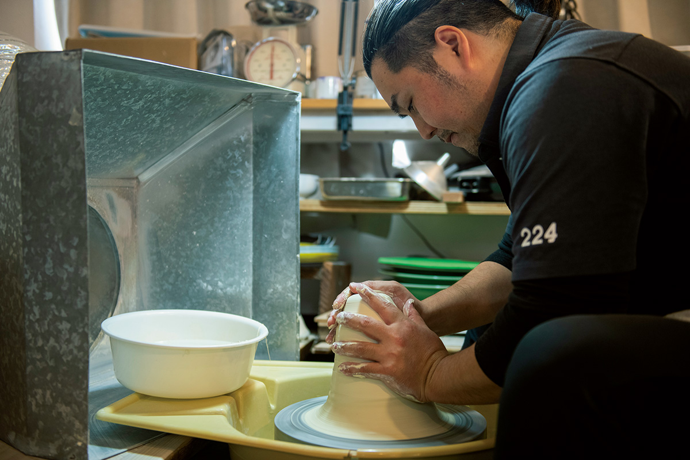
Фарфор Хидзэн-Ёсида делают на юге префектуры Сага уже 400 лет, но за пределами региона о нём почти не знали. Всё изменилось, когда за дело взялся небольшой бренд 224porcelain и молодые мастера из деревни Ёсида.
Фарфор
Четыре века в тени соседей
Посёлок Ёсида лежит в окрестностях Уресино, города горячих источников и чая. Фарфор здесь обжигают около 400 лет, но рядом находятся Арита, Имари и Хасами, и громкие имена соседей долго заслоняли местную посуду. Хидзэн-Ёсида оставался скромным промыслом, известным в основном самим гончарам.
Вывести его на всю страну сумел бренд 224porcelain. В 2021 году ему было всего девять лет, а его вещи уже ценили за необычный дизайн, оригинальность и удобство в быту. Всё, от замысла до производства, ведёт глава мастерской Сатоси Цудзи.
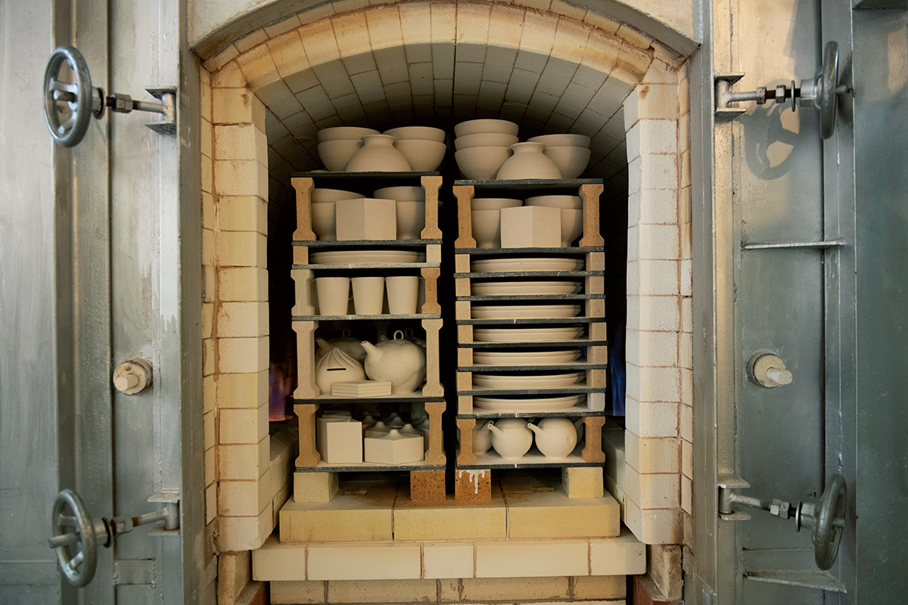
Мастерская
Ремесло с прицелом на будущее
Техника и знание материала у Цудзи основательные, а мысли обращены вперёд. В основе всего желание, чтобы его посудой пользовались как можно больше людей и чтобы она их радовала. Ради производительности он одним из первых в округе завёл цифровое оборудование для изготовления форм, а ещё много работает с новыми видами глины.
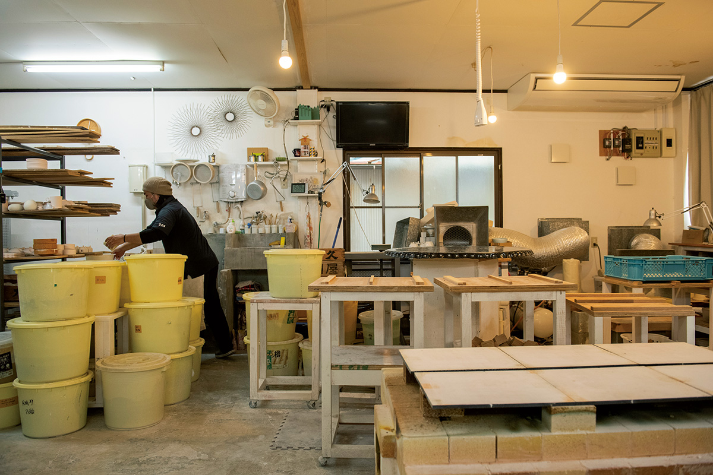
Палитра мастерской одна из самых богатых в Хидзэн-Ёсида: глазурей здесь около сорока. Гипсовые формы для литья делают по чертежам, которые Цудзи сам готовит на компьютере.
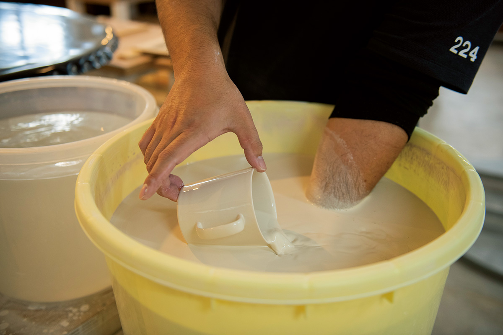
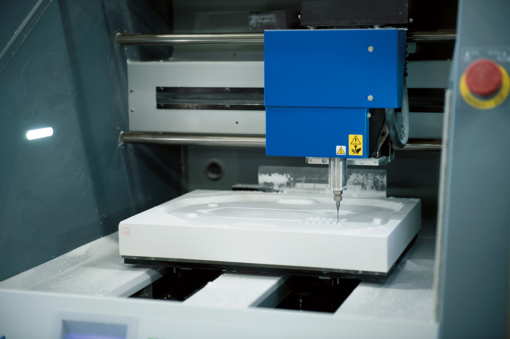
Деревня
Ёсида: маленький промысел, общие планы
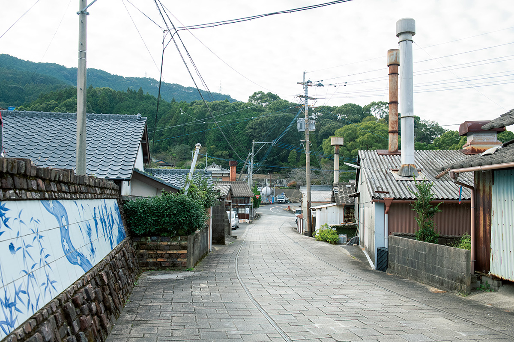
В Ёсиде около десяти гончарных мастерских. Цудзи задаёт себе простой вопрос: можно ли сохранить промысел для следующих поколений, если ничего не менять? С 2016 года деревня отвечает на него делом. В 2016 году здесь провели конкурс дизайна и «охоту за сокровищами», на которой покупатели искали удачные находки среди складских запасов. В 2017 году открылась школа дизайна, в 2018 году появился магазин «Экубо то хокуро» («Ямочки и родинки») с уценённой посудой, у которой есть небольшие изъяны, а в 2019 году обновили зал гончаров. Двигают всё это Цудзи и молодые мастера из кооператива гончаров Ёсиды.
«Мы небольшой промысел, и в этом наша сила: можно пробовать многое. Если весь посёлок работает вместе, возможностей становится больше. В Уресино приезжает около миллиона туристов в год. Если хотя бы один процент купит посуду, для мастерских это большие деньги. Потом прибавить ещё процент, увеличить средний чек на тысячу иен. Это кропотливая работа, но делать её нужно всем вместе»
Сатоси Цудзи
Цели вроде лишнего процента посетителей вполне достижимы, поэтому мастерские легко договариваются между собой и каждый год запускают что-то новое. Традиция у Хидзэн-Ёсида есть, а жёстких канонов нет, и это развязывает руки.
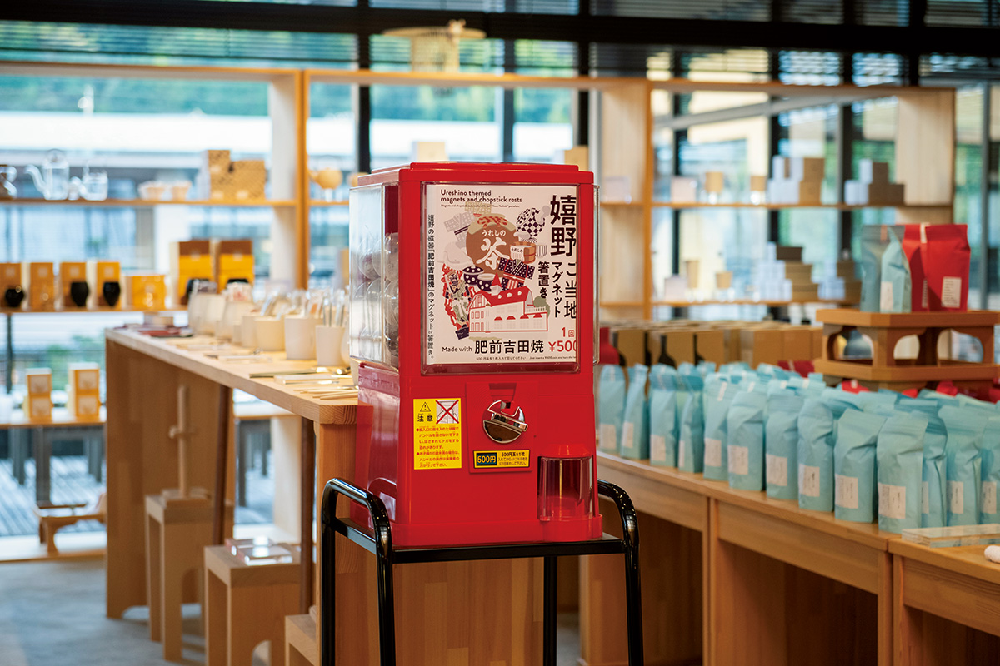
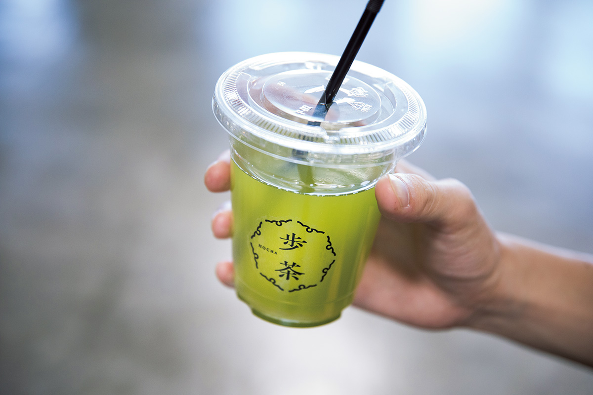
Магазин
224 shop+saryo в квартале онсэнов
Фирменный магазин 224porcelain стоит прямо в квартале горячих источников Уресино, и здесь собран почти весь ассортимент. Посуду можно подержать в руках, оценить вес и фактуру, например у лёгкой фарфоровой глины, и только потом решить. При магазине есть чайное кафе, где чай Уресино подают в посуде 224porcelain, но в 2021 году кафе и бар не работали.
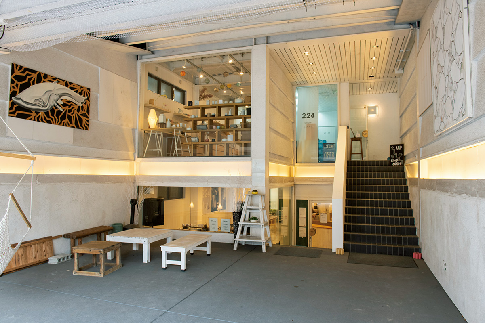
224 shop+saryo
- Адрес
- префектура Сага, Уресино, Уресино-мати, Симодзюку, 909-1
- Телефон
- +81 954-43-1220
- Часы работы
- 10:00–16:00, в субботу, воскресенье и праздники до 18:00
- Выходные
- среда
- Сайт
- 224porcelain.com
Зал гончаров
Выставка восьми мастерских и мастер-класс
В зале гончаров Хидзэн-Ёсида выставлены и продаются изделия восьми мастерских, входящих в кооператив. Стиль у каждой свой: рядом с классикой много современных вещей. Здесь же можно попробовать себя в росписи и лепке, а купить посуду «Экубо то хокуро» можно по предварительной записи по телефону.
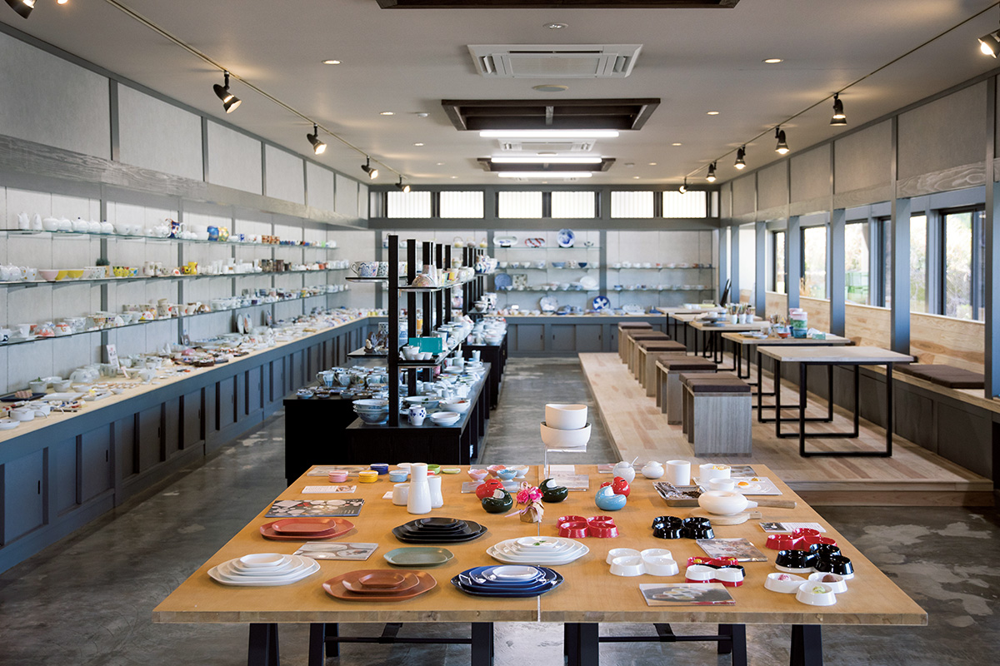
Зал гончаров Хидзэн-Ёсида
- Адрес
- префектура Сага, Уресино, Уресино-мати, Ёсида, 4525-1
- Телефон
- +81 954-43-9411
- Часы работы
- 8:30–16:30, приём на мастер-класс до 15:00
- Выходные
- новогодние праздники
- Сайт
- yoshidayaki.jp
Изделия
Обжарщик для кофе и чашки, которые звенят
Многие впервые услышали о Хидзэн-Ёсида благодаря ручному обжарщику кофе. Идея родилась из сетчатых жаровен, на которых обжаривают зёрна над огнём. Проект приглашённого дизайнера в 2016 году получил гран-при конкурса дизайна Хидзэн-Ёсида среди 167 работ, а Цудзи воплотил его в фарфоре. Через съёмную деревянную ручку внутрь засыпают зёрна, а после обжарки через то же отверстие их высыпают. Диаметр обжарщика 155 мм, длина с ручкой около 320 мм, в 2019 году он стоил 9720 иен.
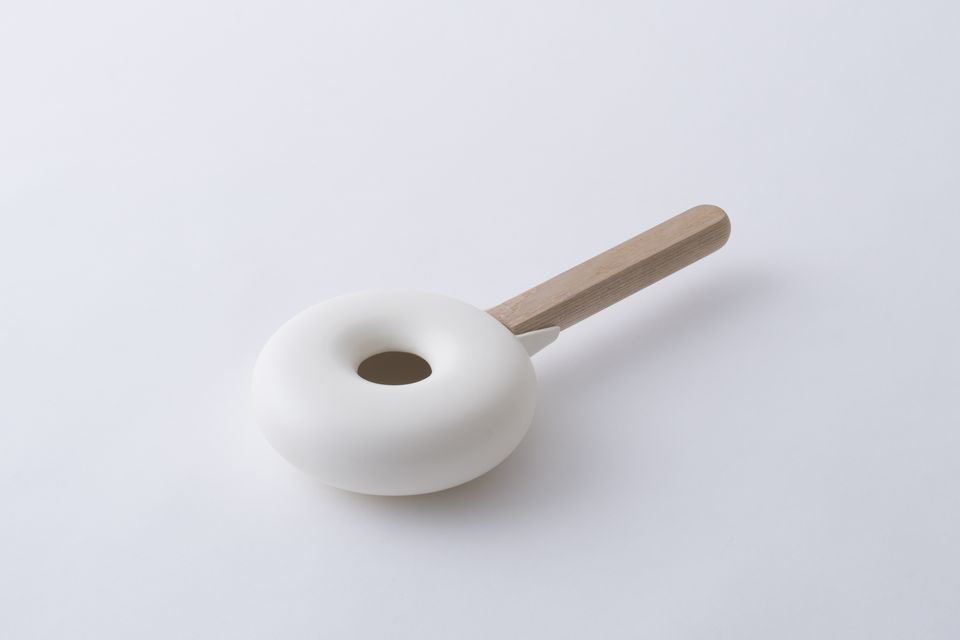
Ещё один проект 224porcelain, бренд «Моноото», мастерская сделала вместе со звуковым дизайнером. Первые чашки поступили в продажу 8 декабря 2020 года. Стенки у них двойные, и в дне спрятан механизм: стоит наклонить чашку, и она мягко звенит. Ножки у неё нет, округлая чашка покачивается на столе и тоже звучит. Двойные стенки к тому же держат тепло, и в руке не горячо.
Звуковой дизайнер записал и разобрал, как звучит фарфор, и вместе с мастерской рассчитал звенящий механизм и форму чашки. Звук помогает и тем, кто плохо видит: по нему легко понять, где стоит чашка, кто из неё пьёт и как быстро. Чашек два размера: L диаметром 85 мм на 140 мл и S диаметром 78 мм на 100 мл.
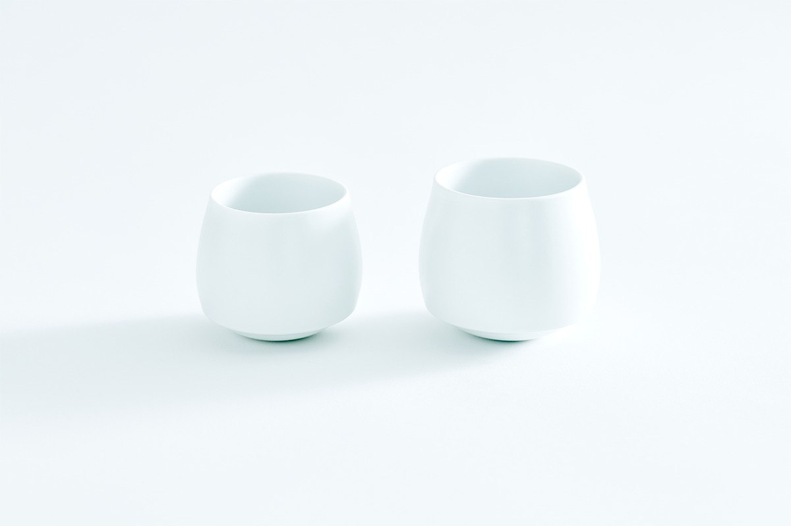
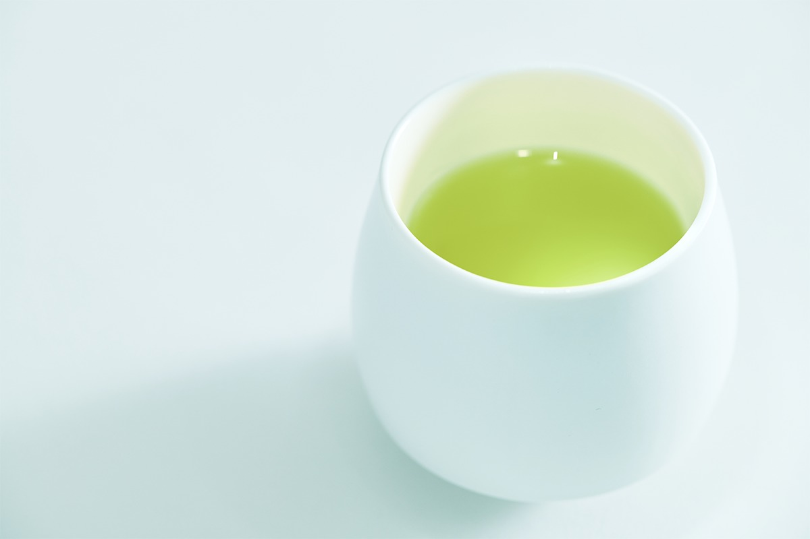
Фото: Хироси Мидзусаки, Хиромаса Оцука, Дайсукэ Абэ.